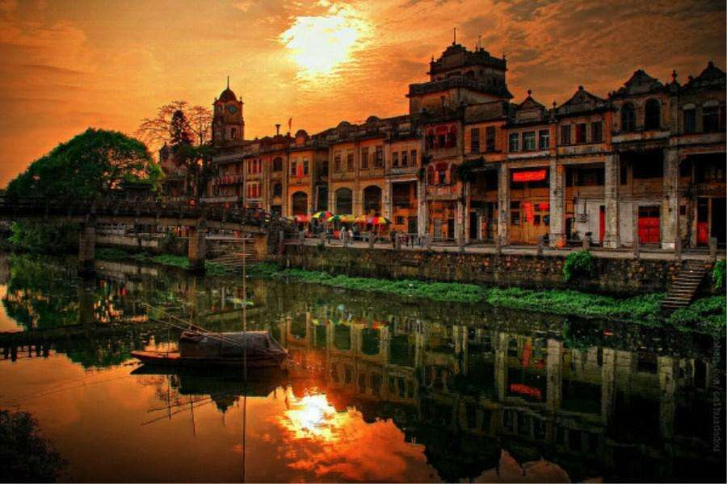
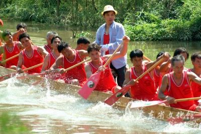

江门，富饶传奇的中国侨都
在浩瀚的南海之滨，奔流的西江和潭江环拥着一片富饶而传奇的土地。这里是世界文化遗产开平碉楼与村落所在地，著名的“中国侨都”。绵延的岁月里，这块土地上曾有无数先民漂洋过海、创业他乡、报效故土。中西合璧的建筑瑰宝点缀着这片广阔的土地，闪耀在世界文化遗产的典册中；400多万侨胞的足迹遍布世界各地，缔造了世界移民史上的奇观。 这里是粤港澳大湾区的重要节点城市，区位优势突出，开发腹地广阔，是珠三角及港澳地区与粤西连接的重要交通枢纽，已开通的广珠城际把江门纳入了珠三角一小时经济圈；已投入使用的珠西综合交通枢纽——江门站，成为省内第四大铁路客运枢纽，江门大道、江顺大桥、广珠城际江门支线、江湛铁路、深江铁路、珠肇高铁等一批重大交通基础设施项目加快建设或相继建成，区内交通网络日臻完善；江门还是粤港澳大湾区内唯一具备可大规模连片开发土地的地级市，发展空间广阔，土地承载力优势明显。
这里还是一座历史悠久、名人辈出、宜居宜业宜游的美丽城市。陈白沙、梁启超、陈少白、冯如等历史人物，黎民伟、胡蝶、戴爱莲、红线女、周润发、刘德华等100多位演艺明星，享誉海内外；著名作家巴金赞赏不已的小鸟天堂、闻名遐迩的岭南心学名山——圭峰山、入选广东省“十大美丽海岛”的上下川岛等风景名胜，让人交口称赞。此外，江门创新开展“一门式”行政服务，在全省乃至全国首创“1+3+N”开放型清单体系。继2018年4月，江门因深化商事制度改革、加强事中事后监管真抓实干、成效明显获得国务院督查激励，2020年8月，“多证合一”“证照分离”改革成为首批“全国法治政府建设示范项目”，商事制度改革工作再获国字号表彰。
江门文化
礼乐龙舟竞赛又称“出大标”或“出科”，是深受乡民爱好又广泛开展的民俗活动，距今已有300多年的历史。
每年端午节前（农历四月尾）乡民从龙舟坞挖起龙舟，洗净淤泥，扎好龙根，每天下午扒到张围河，三只或两只进行非正式竞赛。一河两岸，人山人海，助威的人声、炮竹声响彻张围河，热闹非常。端午节当天，各只龙舟先在本村各个里的河段扒节龙，然后划到庙宇前的河段贺庙；乡民在庙堂前击锣、放鞭炮、递茶水（或饮料）给运动员，祈求风调雨顺，国泰民安。
 开平碉楼，位于广东省江门市下辖的开平市境内，是广府建筑之一，是广府文化的代表之一。
开平碉楼，位于广东省江门市下辖的开平市境内，是广府建筑之一，是广府文化的代表之一。
开平碉楼是中国乡土建筑的一个特殊类型，是集防卫、居住和中西建筑艺术于一体的多层塔楼式建筑，其特色是中西合璧的民居，有古希腊、古罗马及伊斯兰等风格多种。
了解更多